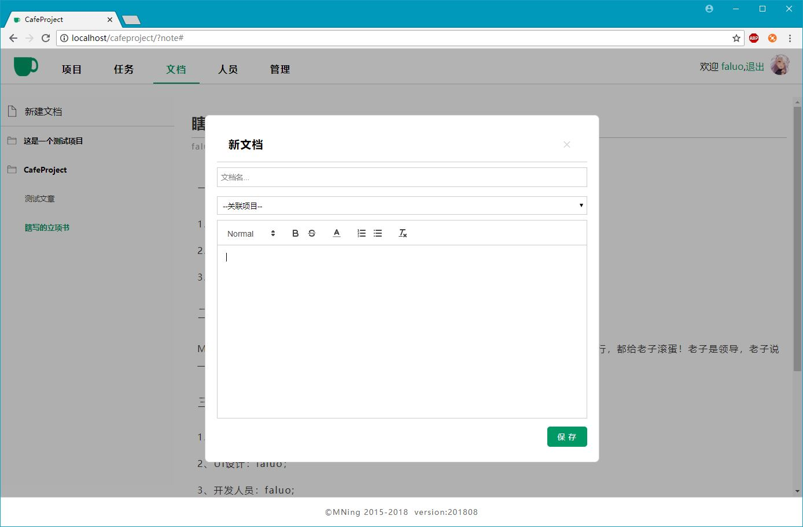
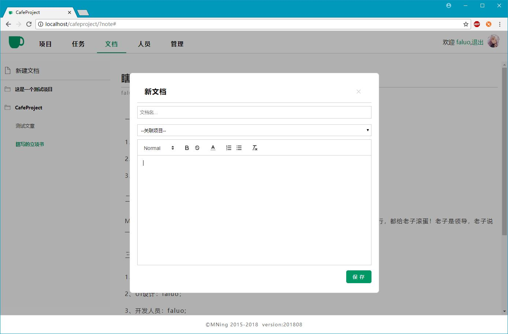

cafeProject-Day12-15-开发完成
随着今天下午“文档”模块的完成，CafeProject的主要功能模块就全部写完了。和之前策划的有很大不同，扔掉了“游客”模块（就我一个人用还要啥游客模块），对细节做了重新规划。新完成的文档模块如图：

这一次尝试把quill富文本框引入了，果然能让页面和功能增色不少。下一步，就是在不断的使用中找BUG，验证不仔细的地方需要再处理一下了。逐步完善吧。
总之，CafeProject开发完成。可以使用了。
©Faluo 2018

随着今天下午“文档”模块的完成，CafeProject的主要功能模块就全部写完了。和之前策划的有很大不同，扔掉了“游客”模块（就我一个人用还要啥游客模块），对细节做了重新规划。新完成的文档模块如图：

这一次尝试把quill富文本框引入了，果然能让页面和功能增色不少。下一步，就是在不断的使用中找BUG，验证不仔细的地方需要再处理一下了。逐步完善吧。
总之，CafeProject开发完成。可以使用了。